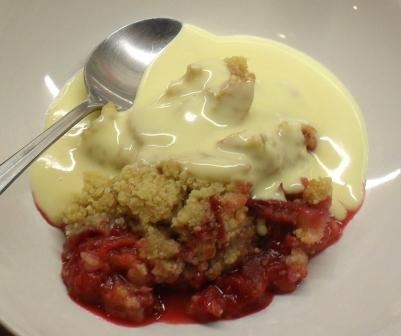

Today I was absolutely knackered. My life isn't the easiest normally, but as I had twisted my neck on the slab of Dr Frankenstein yesterday, I hardly slept and the sleep I did get was always with a nagging pain that stopped me really relaxing. When I woke up I felt awful. I also had to go to work early with no breakfast. About 12.00 I was so out of it I was convinced my name was Gerald and I was living as a hermit in the Outer Hebrides. I had to skive off unwell and come home.
Fortunately, when I got home it was Olias's nap time. I took him upstairs, laid on the bed and put him on my chest, where we fell asleep for an hour or so. You may think of it as lovely bonding, to me it was a good rest.
After a snooze, I was feeling much more chipper - my neck still hurts though, maybe I'll sue for compensation.
Today I looked in the fridge and there was some left over pork from a few days ago. I'd cooked it for my pulled pork sandwiches and now it needed to be used. What to do? What to do?
Well, the pork, although coated in a little American style rub is really just slow roast pork - so I decided to use it in a sort of Thai style pork stew. I almost never throw anything away, any left overs are kept and eaten for lunch, or cooked up as something else. I'm far too mean to throw good food away.
Today's dinner was really quite tasty. It doesn't look great (a big blob of stringy meat), but it went down
well with Toni and me. The kids looked at it said yuk and ran off though. I'll make something a bit more kid
friendly tomorrow. Fish Fingers? Horse Burgers? Suggestions always welcome.

Menu
Ingredients*
Spicy Stewed Pork
Left Over Roast Pork
2 Shallots
1 TSBP Peanut Oil
1 Cup Chicken Stock
1 TBSP Thai Red Curry Paste
1 Can Coconut Milk
1 tsp Sugar
2 Big (Mild) Red Chillies
1 TBSP Thai Fish Sauce
Few Fresh Bail Leaves
Fresh Coriander
Preparation
Today’s Ratings:
Isis: Yuk.
Eve: Yuk.
Olias: Sweet Potatoes - yum.
*All quantities are very approximate and for a family of 5 (2 adults, 3 kids aged 5 years, 3 years & 9 months)
JCBorresen@GMail.com